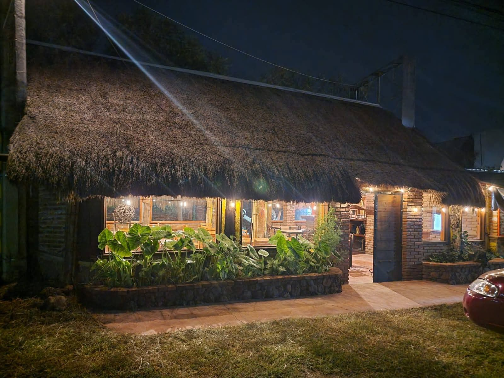
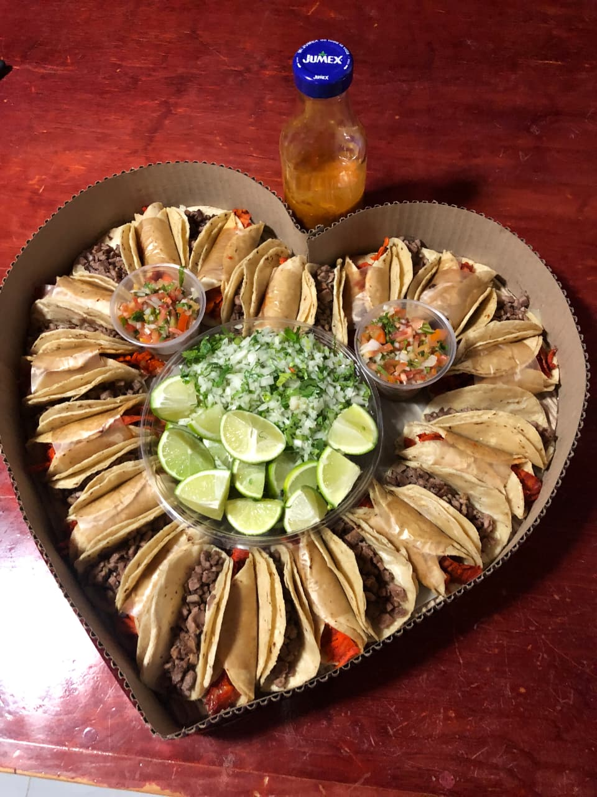

|

|
Sobre Nosotros
Taquería “El Tartán” es un negocio local dedicado a ofrecer auténticos tacos al pastor
preparados al estilo tradicional, con ingredientes frescos y un trompo que mantiene el
sabor clásico de la región. Nuestro ambiente es familiar, cómodo e ideal para disfrutar
de un antojito.
Nos especializamos en tacos bien servidos, carne jugosa y salsas caseras que realzan cada
bocado. También contamos con tortas, gringas y dobladitas, manteniendo siempre la calidad,
el buen servicio y el sabor que nos distingue.
|

|